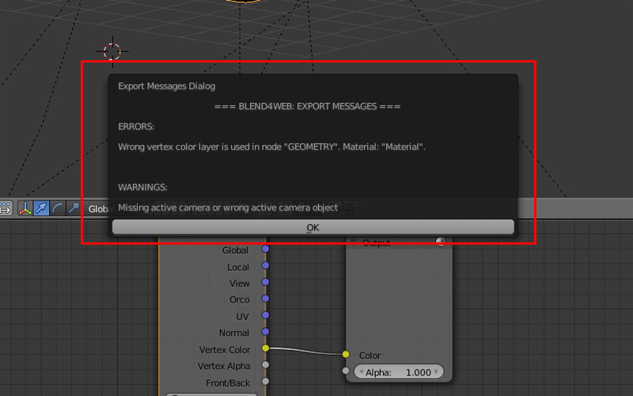
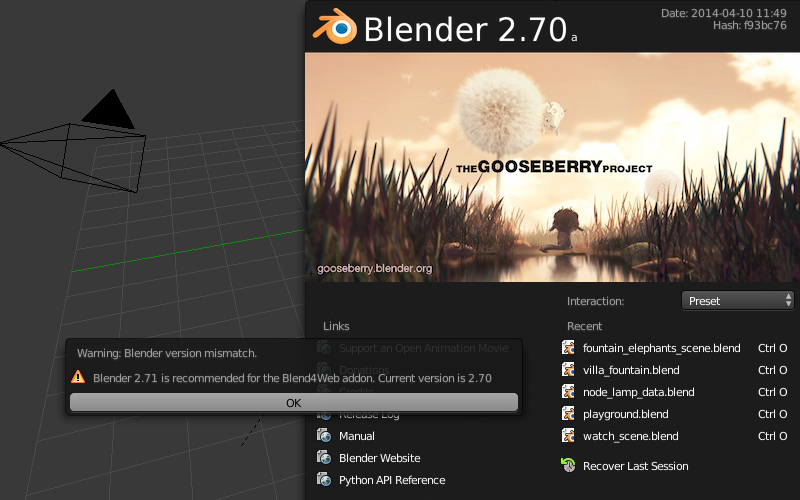
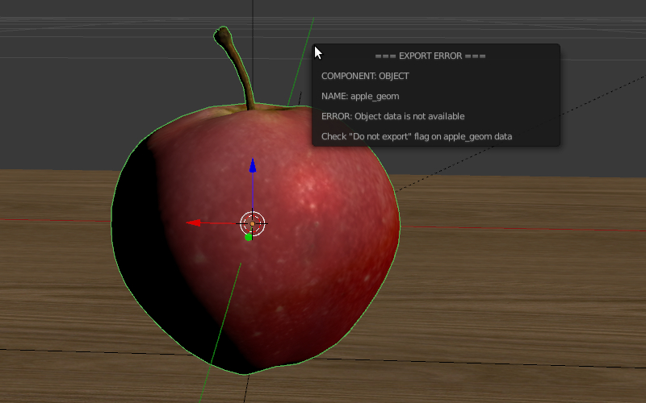
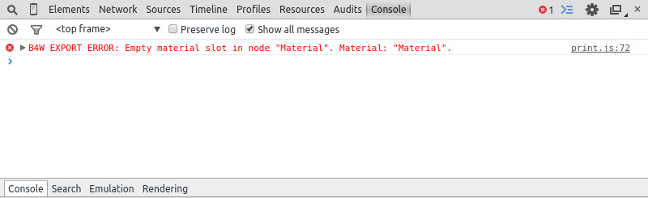
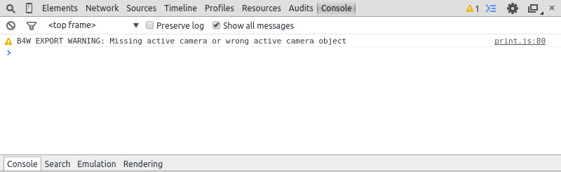

Аддон¶
Опции экспорта¶
- Autosave blend File
- Автосохранение файла, из которого осуществляется экспорт. Включено по умолчанию. Осуществляется непосредственно после экспорта с целью поддержки соответствия между текущим содержимым blend-файла и экспортного файла. Кроме того, для удобства в blend-файле сохраняется относительный путь к экспортному файлу.

- Strict Mode
- Данный режим блокирует экспорт при наличии ошибок и сообщений, требующих внимания пользователя. Режим включается при выставлении опции
Strict Modeв меню экспорта:
{kind=link}
При наличии некритических ошибок экспорта или сообщений, требующих внимания пользователя, вашему вниманию будет представлено диалоговое окно вида:
{kind=link}
- Export Converted Media
- Опция доступна при html-экспорте. Включение данного режима экспорта позволяет записать в HTML файл конвертированные медиафайлы разных форматов. Это необходимо использовать при создании кроссбраузерных и кроссплатформенных приложений при html-экспорте. При этом в html-файл будут записываться файлы, созданные с использованием нашего конвертера.

- Run in Viewer
Автоматически запустить просмотрщик сцен и добавить в него экспортируемую сцену.
При использовании локального сервера разработки, имеется возможность открыть сцену, экспортированную в формате
.json, в просмотрщике сцен. Для этого при экспорте необходимо выбрать любой путь, лежащий внутри файловой структуры Blend4Web SDK.В качестве директории для экспорта может использоваться созданная пользователем директория внутри Blend4Web SDK. При несоблюдении этого условия опция не будет отображаться в меню экспорта. Также опция не будет отображаться если локальный web-сервер не запущен.
{kind=link}
Ошибки инициализации¶
Ошибки инициализации могут проявляться при инициализации аддона, либо при загрузке сцены в Blender. При возникновении появится диалоговое окно с описанием ошибки.
{kind=link}
| Сообщение об ошибке | Причина |
|---|---|
| Blend4Web initialization error! Addon is not compatible with the PLATFORM platform. | Ошибка загрузки аддона. Аддон не совместим с платформой PLATFORM. |
| Warning: Blender version mismatch. Blender VER_REQUIRED is recommended for the Blend4Web addon. Current version is VER_CURRENT. | Предупреждение о возможной несовместимости с текущей версией Blender. Для работы рекомендуется версия Blender’а VER_REQUIRED. Текущая версия - VER_CURRENT. |
Ошибки совместимости¶
Ошибки совместимости версий могут проявиться при просмотре сцены в браузере, если версия аддона, которым был произведен экспорт сцены, не соответствует версии движка Blend4Web, который пытается эту сцену загрузить, а также если .bin-файл не соответствует .json-файлу.
| Сообщение об ошибке | Причина |
|---|---|
| JSON version is too old relative to B4W engine: VER_OLD, required: VER_NEW. Reexport scene with the latest B4W addon to fix it. | Версия аддона, которым была экспортирована сцена, сильно устарела: VER_OLD, движком требуется - VER_NEW. Сцена не будет загружена. Рекомендуется переэкспортировать сцену аддоном последней версии, а также использовать последнюю версию движка. |
| JSON version is a bit old relative to B4W engine: VER_OLD, required: VER_NEW. Some compatibility issues can occur. Reexport scene with the latest B4W addon to fix it. | Версия аддона, которым была экспортирована сцена, немного устарела: VER_OLD, движком требуется - VER_NEW. Сцена будет загружена, однако возможны различные ошибки. Рекомендуется переэкспортировать сцену аддоном последней версии, а также использовать последнюю версию движка. |
| B4W engine version is too old relative to JSON. Can’t load the scene. Update your engine version to fix it. | Версия движка сильно устарела по сравнению с версией аддона, которым был произведен экспорт сцены. Сцена не будет загружена. Рекомендуется использовать последнюю версию движка и аддона. |
| B4W engine version is a bit old relative to JSON. Some compatibility issues can occur. Update your engine version to fix it. | Версия движка немного устарела по сравнению с версией аддона, которым был произведен экспорт сцены. Сцена будет загружена, однако возможны различные ошибки. Рекомендуется использовать последнюю версию движка и аддона. |
| BIN version does not match to JSON version: VER_BIN, required: VER_JSON. Couldn’t load the scene. Reexport scene to fix it. | Версия загружаемого .bin-файла сильно устарела по сравнению с .json-файлом: VER_BIN, версия .json-файла: VER_JSON. Сцена не будет загружена. Рекомендуется переэкспортировать сцену. |
| BIN version does not match to JSON version: VER_BIN, required: VER_JSON. Some compatibility issues can occur. Reexport scene to fix it. | Версия загружаемого .bin-файла немного устарела по сравнению с .json-файлом: VER_BIN, версия .json-файла: VER_JSON. Могут возникнуть ошибки несовместимости. Рекомендуется переэкспортировать сцену. |
Критические ошибки экспорта¶
При возникновении ошибок во время экспорта появляется диалоговое окно BLEND4WEB EXPORT ERROR с описанием проблемы:

COMPONENT- тип компонента (объект, меш, материал, текстура и т.д.), при экспорте которого произошла ошибка.
NAME- имя компонента.
ERROR- краткое описание возникшей проблемы на англ. языке.
{kind=link}
| Сообщение об ошибке | Причина |
|---|---|
| Dupli group error; Objects from the GROUP_NAME dupli group on the OBJECT_NAME object cannot be exported | Ни один из объектов группы GROUP_NAME, выбранной для дублирования на объекте OBJECT_NAME, не экспортируется. Требуется разрешить экспорт хотя бы одного из объектов группы, либо убрать дублирование группой. |
| Export to different disk is forbidden | Не разрешен экспорт в директорию, находящуюся на другом диске |
| Incompatible objects with a shared mesh; The OBJECT_NAME object has both vertex groups and a shared mesh | Несовместимые объекты с общим мешем.
Не допускается экспорт объекта с общим
мешем и вертексными группами. Исключения:
экспорт возможен, если
на объекте включены опции
Apply modifiers,
Export vertex animation,
Export edited normals,
Apply scale
(т.к. в этом случае при экспорте
происходит полное копирование мешей). |
| Incomplete mesh; Material slot is empty | Неполный меш: пустой слот материала. |
| Incomplete vehicle. The NAME vehicle doesn’t have any chassis or hull | Моделируемое средство передвижения NAME
является незавершенным: оно должно
содержать один элемент Chassis или
Hull. |
| Incomplete vehicle. The NAME vehicle requires at least one bob | Моделируемое средство передвижения NAME
является незавершенным: оно должно
содержать хотя бы один элемент Bob. |
| Incomplete vehicle. The NAME vehicle requires at least one wheel | Моделируемое средство передвижения NAME
является незавершенным: оно должно
содержать хотя бы один элемент wheel. |
| Incorrect mesh; Corrupted file: Wrong group indices | Меш содержит вершины, привязанные к несуществующей группе. |
| Incorrect mesh; Corrupted file: Wrong vertice positions | Поврежденный файл: некорректное значение координаты вертекса. |
| Incorrect mesh; Corrupted file: Wrong normals | Поврежденный файл: некорректное значение нормали. |
| Incorrect mesh; Corrupted file: Wrong tangents | Поврежденный файл: некорректное значение тангенты. |
| Incorrect mesh; Corrupted file: Wrong texture coordinates | Поврежденный файл: некорректное значение текстурной координаты. |
| Incorrect mesh; Corrupted file: Wrong vertex group weights | Поврежденный файл: некорректное значение веса вертекса в вертексной группе. |
| Incorrect mesh; Corrupted file: Wrong vertex color values | Поврежденный файл: некорректное значение вертексного цвета. |
| Incorrect vertex animation; Object has no vertex animation | Включен экспорт вертексной анимации для объекта, но ни одной анимации не имеется. |
| Incorrect vertex animation; Unbaked “ANIM_NAME” vertex animation | Включен экспорт вертексной анимации для меша, но анимация ANIM_NAME не содержит ни одного кадра. |
| Loading of resources from different disk is forbidden | Не разрешен экспорт ресурсов из директории, находящейся на другом диске. |
| The material has a normal map but doesn’t have any material nodes | Нодовый материал использует
Normal Mapping, но не имеет ноды
Material. |
| The mesh has a UV map but has no exported material | Меш имеет текстурную развертку, но не имеет материала, который бы экспортировался. |
| The mesh has a vertex color layer but has no exported material | Меш имеет слой вертексного цвета, но не имеет материала, который бы экспортировался. |
| No such file or directory | Данная директория не существует. |
| Object constraint has no target | Для ограничителя объекта
(вкладка Object Constraints)
не установлено свойство
Target Object. |
| Particle system error; Dupli group isn’t specified | Ошибка системы частиц. Не выбрана группа, используемая в качестве частицы. |
| Particle system error; Dupli object isn’t specified | Ошибка системы частиц. Не выбран объект, используемый в качестве частицы. |
| Particle system error; Dupli object OBJECT_NAME doesn’t export | Ошибка системы частиц. Объект
OBJECT_NAME, выбранный в качестве
частицы, не экспортируется (на нем
выбрана опция Do not export). |
| Particle system error; The GROUP_NAME dupli group contains no valid object for export | Ошибка системы частиц. Ни один подходящий
объект из группы GROUP_NAME, выбранной в
качестве частицы, не экспортируется.
Либо на таких объектах выбрана опция
Do not export, либо объекты имеют
неподходящий тип.
Поддерживаемые типы: MESH. |
| Particle system error. Unsupported render type TYPE for the EMITTER/HAIR particles PSYS_NAME on object NAME. Particle system removed. | Ошибка системы частиц. Неподдерживаемый тип рендера TYPE для EMITTER/HAIR системы частиц с именем PSYS_NAME, находящейся на объекте NAME. Система частиц удалена. |
| Particle system error; Wrong dupli object type TYPE_NAME | Ошибка системы частиц. В качестве частицы
выбран объект неподходящего типа.
Поддерживаемые типы: MESH. |
| Permission denied | Нет прав доступа к текущей директории. |
| Wrong edited normals count; It doesn’t match with the mesh vertices count | Число редактируемых нормалей не
совпадает с числом вершин меша.
Требуется сделать Clean Up либо
Save в панели
B4W Vertex Normals Editor. |
| Wrong overridden bounding box; Check the mesh’s bounding box values | Указаны неверные размеры при
переопределении BoundingBox для меша:
минимальное значение больше максимального
для хотя бы одного из измерений. |
| Wrong vertex animation vertices count; It doesn’t match with the mesh vertices count for “ANIM_NAME” | Включен экспорт вертексной анимации, но число вершин покадрово в анимации ANIM_NAME не совпадает с числом вершин меша. Возможное решение - “перезапекание” анимации. |
Некритические ошибки экспорта¶
В отличие от критических ошибок экспорта, рассмотренных ранее, данные ошибки не препятствуют
экспорту, однако могут приводить к некорректному отображению сцен. Сообщения выводятся в консоли браузера (горячая клавиша F12) при загрузке сцены. Сообщение имеет вид:
B4W EXPORT ERROR: Сообщение об ошибке
{kind=link}
| Сообщение об ошибке | Причина |
|---|---|
| Canvas texture ID NAME already exists. Texture NAME. | Данный идентификатор для объекта типа
Canvas уже существует. |
| Empty canvas texture ID for texture NAME. | Пустое поле идентификатора для объекта
типа Canvas. |
| Empty material slot in node “NAME”. Material: “NAME”. | Не задан материал в ноде: “NAME” |
| Environment map in the “NAME” world texture slot cannot be a movie. | Карта окружения не может быть видео. |
| Ignoring LODs after empty LOD for the NAME object. | В списке LOD объектов, настроенных для объекта NAME, были проигнорированы все LOD объекты, следующие за пустым. |
| Incomplete mesh NAME; Dynamic grass vertex colors required by material settings | Неполный меш: специальный материал для
ландшафта использует опции
Dynamic grass size и/или
Dynamic grass color, но у меша нет
слоев вертексного цвета с такими именами. |
| Incomplete mesh; Material settings require vertex colors | Неполный меш: материал меша имеет
включенную опцию вертексного цвета
(Vertex Color Paint), но у меша нет
слоя вертексного цвета. |
| Incorrect NLA script, falling back to simple sequential NLA. | Некорректный NLA-скрипт. Вместо него будет использоваться стандартная NLA-анимация. |
| Invalid link found in node material. Material: “NAME”. | Нодовый материал с именем “NAME” содержит некорректные связи между нодами. |
| No image in the NAME texture. [Material: NAME.] | У текстуры отсутствует изображение. |
| No texture for the NAME particle settings texture slot. | В текстурном слоте системы частиц отсутствует текстура. |
| No texture in the NAME world texture slot. | В текстурном слоте объекта World
отсутствует текстура. |
| No texture in the texture slot. Material: NAME. | В текстурном слоте материала отсутствует текстура. |
| Node material invalid: “NAME”. Check sockets compatibility: “FROM_NODE” with “TO_NODE”. | Ошибка нодового материала. Типы входа и
выхода связи между нодами FROM_NODE и
TO_NODE не соответствуют друг другу. |
| Object “NAME” hasn’t renderable data. Converted to EMPTY. | Объект с именем “NAME” является вырожденным, например, не имеет полигонов, поэтому его тип изменён на EMPTY. |
| Object “NAME” has the mesh with shape keys. The property “Relative” of mesh has been enabled. | Объект с именем “NAME” имеет меш с опорными фигурами. На меше было включено свойство “Relative”. |
| Only 2 UV textures are allowed for a mesh; The mesh has N UVs. | Движком поддерживаются только до 2 UV текстур на каждый меш. Меш содержит UV текстуры в количестве N. |
| Packed media “FILE_NAME” has not been exported to “CONVERTED_FILE_PATH” | Запакованный медиа файл “FILE_NAME” не может быть конвертирован в “CONVERTED_FILE_PATH”. Требуется распаковать файл и произвести конвертацию. |
Particle system error for “NAME”;
The “NAME” vertex color specified
in the from field is missing in
the last of the “OBJECT_NAME”
object’s vertex colors |
Ошибка системы частиц. Вертексный цвет
NAME указанный в поле from,
отсутствует в эмиттере OBJECT_NAME. |
Particle system error for “NAME”;
The “NAME” vertex color specified
in the to field is missing in
the list of the “OBJECT_NAME”
object’s vertex colors |
Ошибка системы частиц. Вертексный цвет
NAME указанный в поле to, отсутствует
в объекте OBJECT_NAME, выбранном в
качестве частицы. |
Particle system error for “NAME”;
The “NAME” vertex color specified
in the “to field is missing in
the “OBJECT_NAME” object
(“GROUP_NAME” dupli group) |
Ошибка системы частиц. Вертексный цвет
NAME указанный в поле to, не
присутствует в объекте OBJECT_NAME группы
GROUP_NAME, выбранной в качестве частицы. |
| Particle system error for object “NAME”. Invalid dupli object “OBJECT_NAME”. | Ошибка системы частиц для объекта NAME. Неверный дупли объект OBJECT_NAME. |
| Sound file is missing in the SPEAKER object “NAME”. Converted to EMPTY. | У объекта типа SPEAKER отсутствует звуковой файл. Тип объекта изменён на EMPTY. |
| The main scene NAME can not be rendered by another scene. Material NAME has been removed. | Основная сцена NAME не может отображаться другой сценой. Материал NAME был удален. |
| The main scene NAME can not be rendered by another scene. Texture NAME has been removed. | Основная сцена NAME не может отображаться другой сценой. Текстура NAME был удалена. |
| The NAME action has decimal frames. Converted to integer. | Анимация NAME содержит дробные значения кадров. Округлено до целых. |
| The NAME armature modifier has a proxy object as an armature. Modifier removed. | Модификатор арматуры имеет прокси объект в качестве арматуры. |
| The NAME armature modifier has no armature object or it is not exported. Modifier removed. | В модификаторе NAME типа Armature не
указан объект, либо объект не
экспортируется. Модификатор удален. |
| The NAME curve modifier has no curve object. Modifier removed. | В модификаторе NAME типа Curve не
указан объект. Модификатор удален. |
| The NAME curve modifier has unsupported curve object. Modifier removed. | В модификаторе NAME типа Curve указан
неподходящий объект. Модификатор удален. |
| The NAME object has the NAME armature modifier and a vertex animation. Modifier removed. | Объект NAME имеет вертексную анимацию и арматурный модификатор. Модификатор удален. |
| The NAME LAMP node has no lamp object. Material: NAME. | В ноде NAME типа LAMP не указан
подходящий объект. |
| The NAME node is not supported. The NAME material will be rendered without nodes. Material: NAME. | Нода с данным именем не поддерживается движком, поэтому нодовый материал будет отключён. Чаще всего проблемы подобного рода возникают при использовании нод Cycles. |
| The NAME object has NAME armature modifier which references the wrong group. Modifier removed. | Объект должен находиться в той же группе, что и арматура или оба объекта должны явно присутствовать на сцене. |
| TEXTURE_TYPE isn’t supported, WORLD_NAME | TEXTURE_TYPE тип текстуры не поддерживается для мира, WORLD_NAME |
| Using B4W_REFRACTION node NODE_NAME with incorrect type of Alpha Blend. Material: NAME. | Используется нодовый материал
с неправильно заданным свойством Alpha
Blend. Допускается значение
Alpha sort, Alpha blend и Add
при использовании ноды “REFRACTION”. |
| Wind bending: not all vertex colors exist for “NAME”. Properties were set to default values. | Настройки процедурной анимации деревьев: должны существовать все указанные слои вертексных цветов. |
| Wind bending: vertex colors weren’t properly assigned for “NAME”. Properties were set to default values. | Настройки процедурной анимации деревьев;
должны быть указаны названия всех слоев
вертексных цветов
(Main stiffness (A),
Leaves stiffness (R),
Leaves phase (G),
Overall stiffness (B)),
либо только главного
(Main stiffness (A)),
либо ни одного из них. |
| Wrong “Height Map” input for the “NAME” B4W_PARALLAX node. Only link from the TEXTURE node with a non-empty texture is allowed. | На вход “Height Map” ноды NAME типа
B4W_PARALLAX подаются некорректные
данные. Разрешено подавать только выход
из ноды типа TEXTURE с заполненой
текстурой. |
| Wrong texture coordinates type in texture NAME. [Material: NAME.] | Для текстур с изображением (image)
поддерживаются следующие типы координат:
UV, Normal и Generated. |
Прочие сообщения¶
Сообщения выводятся в консоли браузера (горячая клавиша F12) при загрузке сцены. Сообщение имеет вид:
B4W EXPORT WARNING: Сообщение экспорта, требующее внимания пользователя
{kind=link}
| Сообщение об ошибке | Причина |
|---|---|
| Missing active camera or wrong active camera object | На сцене отсутствует активная камера
(свойство Camera на вкладке
Scene). |
| Missing world or wrong active world object | На сцене должен быть хотя бы один мир. |
| NAME particle settings has the NAME texture rendering a scene. It has been replaced by the default texture. | NAME система частиц имеет NAME текстуру, которая отображает сцену. Эта текстура была заменена на стандартную. |
| The action NAME has no fcurves. | В анимации NAME нет ни одного канала. |
| The “NAME” camera has unsupported PANORAMIC type. Changed to PERSPECTIVE type.” | Панорамная камера не поддерживается. Будет использована перспективная камера. |
Перевод аддона¶
Имеется возможность перевести аддон на язык, доступный в Blender’e. Для этого необходимо переименовать файл “empty.po”, находящийся в директории: SDK/blender_scripts/addons/blend4web/locales, на одно из имен, соответствующих таблице:
| Имя файла | Язык |
|---|---|
| ru_RU.po | Russian |
| ja_JP.po | Japanese |
| en_US.po | English |
| nl_NL.po | Dutch |
| it_IT.po | Italian |
| de_DE.po | German |
| fi_FI.po | Finnish |
| sv_SE.po | Swedish |
| fr_FR.po | French |
| es.po | Spanish |
| ca_AD.po | Catalan |
| cs_CZ.po | Czech |
| pt_PT.po | Portuguese |
| zh_CN.po | Simplified Chinese |
| zh_TW.po | Traditional Chinese |
| hr_HR.po | Croatian |
| sr_RS.po | Serbian |
| uk_UA.po | Ukrainian |
| pl_PL.po | Polish |
| ro_RO.po | Romanian |
| ar_EG.po | Arabic |
| bg_BG.po | Bulgarian |
| el_GR.po | Greek |
| ko_KR.po | Korean |
| ne_NP.po | Nepali |
| fa_IR.po | Persian |
| id_ID.po | Indonesian |
| sr_RS@latin.po | Serbian Latin |
| ky_KG.po | Kyrgyz |
| tr_TR.po | Turkish |
| hu_HU.po | Hungarian |
| pt_BR.po | Brazilian Portuguese |
| he_IL.po | Hebrew |
| et_EE.po | Estonian |
| eo.po | Esperanto |
| es_ES.po | Spanish from Spain |
| am_ET.po | Amharic |
| uz_UZ.po | Uzbek |
| uz_UZ@cyrillic.po | Uzbek Cyrillic |
| hi_IN.po | Hindi |
| vi_VN.po | Vietnamese |
Затем нужно открыть этот файл и написать перевод аддона.
Если вы пишете перевод аддона, вы можете прислать нам ваш .po файл любым доступным способом, чтобы он был включен в состав аддона.